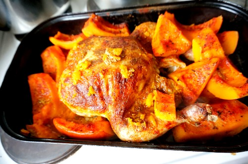
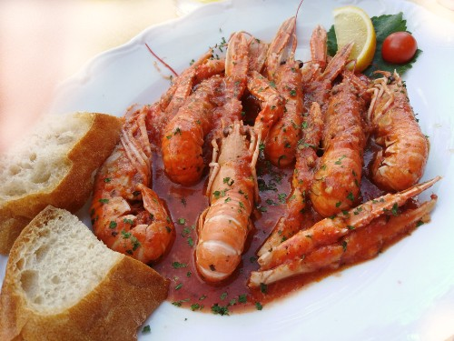
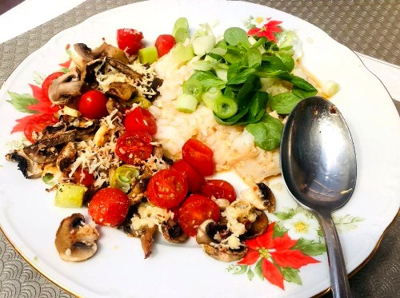
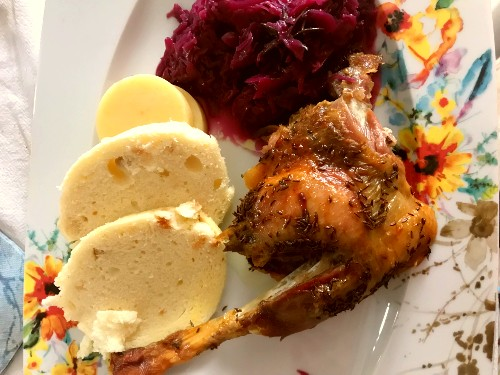
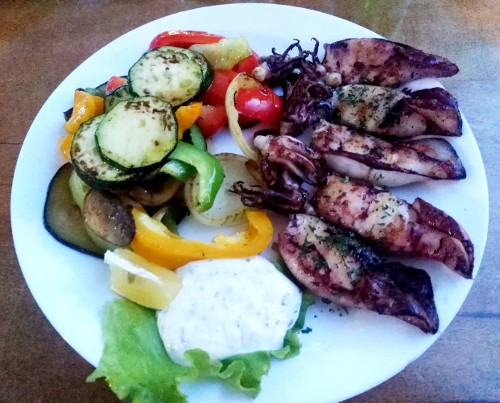
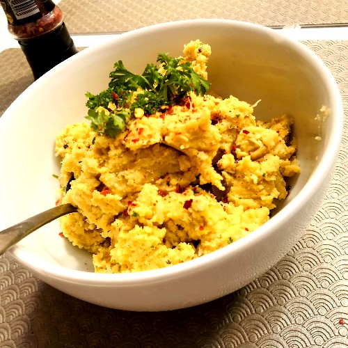

Kuře na dýni
Tygří krevety s chilli omáčkou
Žampióny na grilu
Kachna se zelím
Olihně na grilu
Tygří krevety na grilu

Kouzlo vaření je v tom, když se dělá s láskou a s fantazií. Nebojím se experimentovat a vymýšlet nové recepty. I jen malá změna třeba jen v koření vyrobí úplně nový pokrm.
Všechny hotová jídla si vyfotím, jelikož mám focení ráda jak přes fotoaparát tak přes telefon. Fotografie si sama poté edituji ve Photoshopu.
Pro vaší představu a inspiraci vkládám pár fotek receptů, které jsem s Láskou vařila.
Takhle jsem po požití chobotnice zfialověla.
Cizrna nebo-li římský hrách je luštěnina velmi oblíbená vegany, kteří jí umí v kuchyni využít hned na několik způsobů. Já jsem si oblíbila recept na pomazánku, která je tak žravá, že se nedá přestat.:) V obchodě jí můžete koupit již namíchanou pod názvem humus. Co se týče formy, na trhu je buď v plechovkách naložená ve slané vodě nebo klasicky v sáčku v tvrdé syrové podobě. Preferuji tu ze sáčku. Celý ho vysypu do hrnce s vodou a nechám přes noc změknout. Ideálně je také na to dobrý pomalý hrnec.
| Ingredience | Množství |
|---|---|
| Cizrna | 500g |
| Olivový olej | 2 lžíce |
| Česnek | Celá hlava |
| Horčice | 2 lžíce |
| Zeleninový vývar | 1 hrnek |
| chilli, pepř, sůl, curry, petrželka | 2 špetky od každého |
Můj blog slouží jak tvé inspiraci, tak k tvé diskuzi, komentářům a tipům na nové recepty, myslím tím jakékoliv. České, francouzské, exotické. Budu se těšit i na tvé nápady ve vaření, které mi můžeš poslat na email nebo se mi ozvi na Facebook a já tvé recepty ráda zveřejním na mém blogu, samozřejmě s tvým svolením.
Petra Jamečná
Lužný 14
Perštejn
431 63
E-mail: jamecnapetra@gmail.com
Mobil: +420 724 620 678